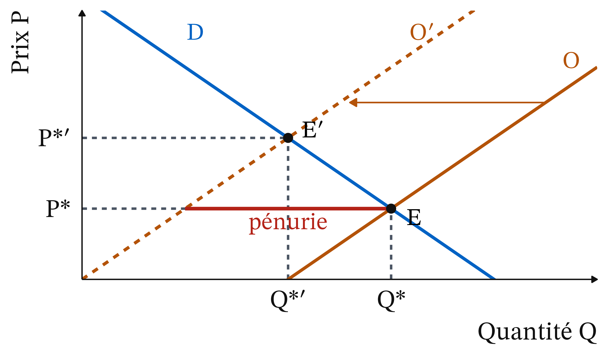
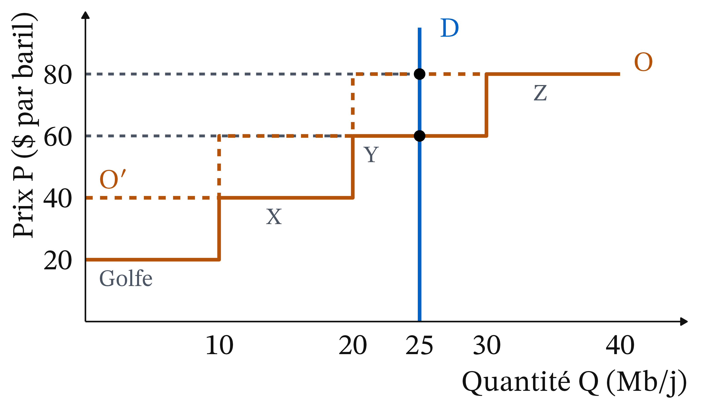
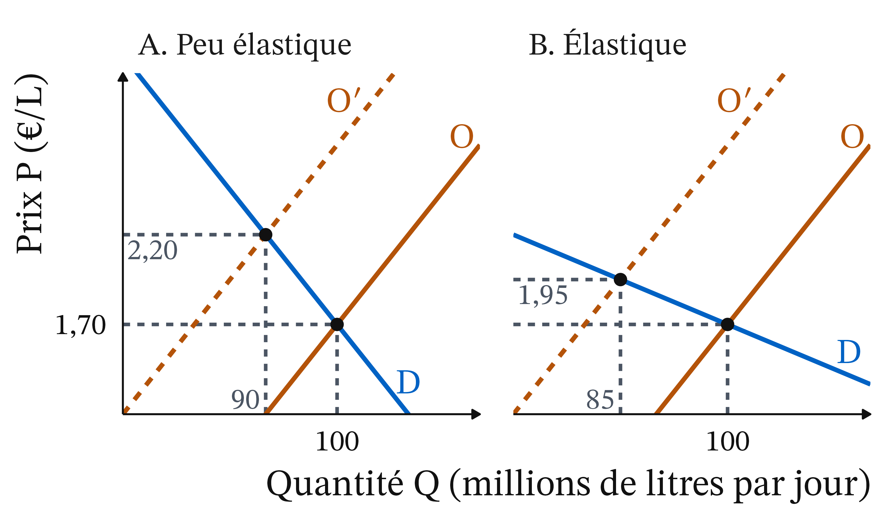
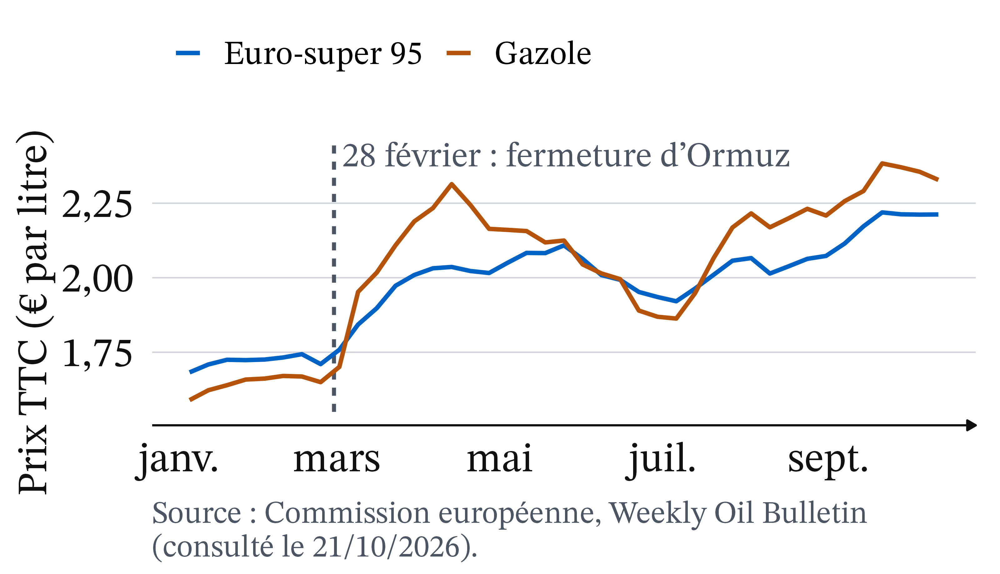
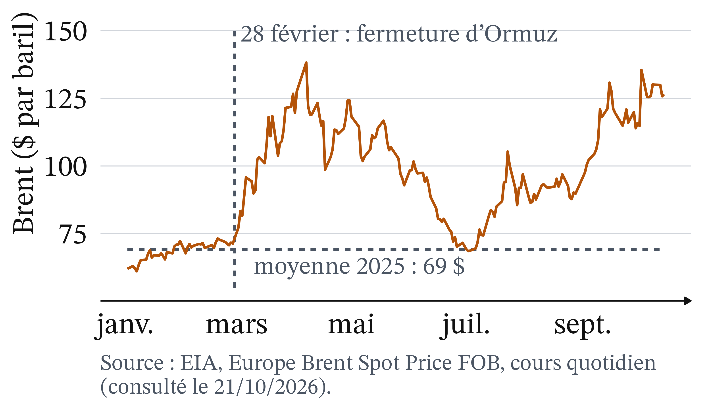
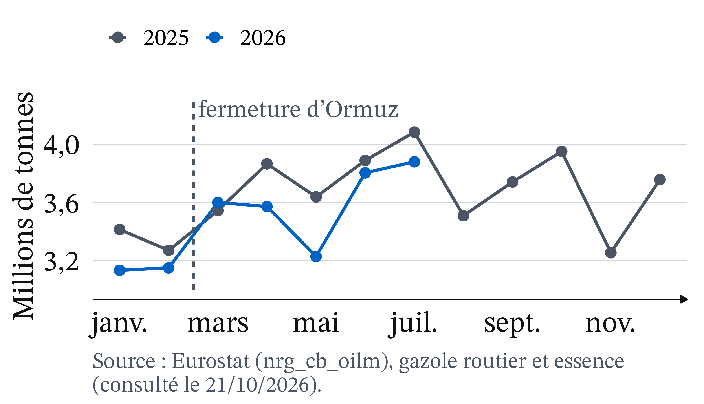

Euro-super 95 : 1,71 € à 2,21 € le litre (+29,3 %)
Gazole : 1,65 € à 2,33 € (+41,1 %)
(Commission européenne, Weekly Oil Bulletin, TTC, du 23/02 au 12/10/2026)
La presse raconte un coût qui monte et des automobilistes qui doivent rouler
« La hausse des coûts d’approvisionnement en pétrole fait flamber les prix des carburants » (Le Figaro, 09/03/2026)
« Si cela continue, je n’aurai plus les moyens d’aller travailler » (Sud Ouest, 30/03/2026)
1974. Photo : D. Falconer, domaine public, Wikimedia Commons
Trois faits intriguent
Un détroit lointain fait bondir la pompe.
On paie beaucoup plus, on roule à peine moins.
Le gazole devient plus cher que l’essence.
Pourquoi si fort ? Deux outils : déplacement, élasticité.
Rappel : offre et demande se rencontrent en P*, et un seul facteur change à la fois
Au prix d’équilibre P*, offre et demande valent Q*.
Au-dessous de P* : pénurie. Au-dessus : surproduction.
Toutes choses égales par ailleurs : une seule cause varie.
Un producteur fait une unité de plus tant qu’elle rapporte plus qu’elle ne coûte.
Marshall : pour expliquer un prix, dire quelle courbe a bougé
Vers 1891 · Elliott and Fry, domaine public, Wikimedia Commons
Alfred Marshall (1890), Principles of Economics · école néoclassique. Offre et demande sont les deux lames d’une paire de ciseaux.
L’offre reflète le coût du dernier baril produit
Définition 1 (Coût marginal) Le coût marginal (Cm) est le coût de production d’une unité de plus. Au prix P, on produit toutes les unités dont le Cm est inférieur ou égal à P.
Un choc d’offre déplace la courbe ; le prix du bien, lui, fait glisser
Choc d’offre : la quantité offerte change à chaque prix, O devient O′. Négatif (guerre, panne, embargo) : vers la gauche, ou vers le haut.
Prix du bien : on glisse le long de la courbe.
Autre cause : la courbe se déplace.
L’élasticité mesure la réaction de la quantité au prix, faible à court terme pour le carburant
e = variation de Q (en %) ÷ variation de P (en %). Négative.
|e| < 1 : demande peu élastique. Pour le carburant, e est compris entre −0,40 et −0,21 (Insee Analyses n° 86, 06/07/2023).
Un choc d’offre fait monter le prix et baisser la quantité

Figure 1
Piège : le prix a monté, mais la demande n’a pas baissé
La hausse du prix fait baisser la quantité demandée (glissement le long de D). La demande (la courbe D) n’a pas bougé : seule l’offre s’est déplacée.
Le prix est fixé par le producteur le plus cher dont on a besoin

Figure 2
Sans le Golfe, le prix passe de 60 $ à 80 $ : +33 %
Avant : Golfe, X et Y suffisent. Prix = Cm de Y = 60 $.
Après : il faut X, Y et Z. Prix = 80 $.
(80 − 60) ÷ 60 = +33 %.
Producteur X : 20 $ par baril de plus que son coût, puis 40 $.
Pause : 15 minutes
Même choc chiffré : l’équilibre passe de 1,70 € et 100 à 2,20 € et 90, donc e ≈ −0,34
Le choc retire 20 millions de litres à chaque prix.
Prix : +0,50 ÷ 1,70 = +29,4 %. Quantité : −10 %.
e = −10 ÷ 29,4 ≈ −0,34, dans la fourchette de l’Insee.
Même choc, deux demandes : le prix monte plus si la demande est peu élastique

Figure 3
Même choc, deux histoires : le prix ou la quantité encaisse
Demande peu élastique (e ≈ −0,34) : prix +29,4 %, quantité −10 %
Demande élastique (e ≈ −1) : prix +14,7 %, quantité −15 %
Le prix à la pompe a suivi le brut, puis les raffineries

Figure 4
Le brut a presque doublé en six semaines

Figure 5
Du baril à la pompe, la hausse vient du prix avant taxes, pas de l’accise
Euro-super 95, €/L
23 février
12 octobre
Prix hors taxes
0,735
1,153
Accise
0,690
0,690
TVA à 20 %
0,285
0,369
Source : Commission européenne, Weekly Oil Bulletin ; calcul de l’auteur (consulté le 21/10/2026).
Le gazole a subi deux déplacements de l’offre
Le brut : 71,66 $ le 26 février, 126,55 $ le 14 octobre (Brent, EIA).
Le raffinage : diesel importé du Golfe, moratoire russe, raffineries endommagées.
Les Français ont payé plus cher mais n’ont presque pas moins roulé

Figure 6
Avec e ≈ −0,3, les ménages achètent presque autant, beaucoup plus cher
Prix +40 %, quantité −12 % (0,3 × 40).
Facture : 1,40 × 0,88 ≈ 1,23, soit environ +23 %.
En mars, les anticipations ont déplacé la demande
Les 2 et 3 mars 2026, plus de 6 millions de paiements par carte dans les stations : une « ruée anticipative » (The Conversation, 13/10/2026).
Piège : une chute de 30 % de la consommation n’est pas une élasticité
Du 11 au 20 septembre 2026 : −30 % de consommation, environ +5 % de prix (The Conversation, 13/10/2026 ; AFP, 10/09/2026). −30 ÷ 5 donnerait e = −6, invraisemblable. Des stations sont aussi à sec : la quantité baisse sans que la demande ait changé.
Un prix plafonné sous l’équilibre crée la pénurie : le cas TotalEnergies
Depuis le 22 juillet : SP95-E10 à 1,99 € au plus, gazole à 2,25 € (TotalEnergies, 22/07/2026).
Le 23/09, le SP95-E10 vaut 2,16 € en moyenne (AFP, 24/09/2026).
Part de marché : 22 % à 25 % fin août, selon son PDG (AFP, 29/08/2026).
Là où le prix est bloqué, les stations sont à sec et la file rationne
21/09/2026 : 17 % des stations manquent d’un carburant, dont 91 % de stations Total (AFP).
Le ministre y voit « la conséquence directe du plafonnement du prix ».
Coût pour Total : 250 à 300 M€ fin août (selon son PDG, AFP, 29/08/2026), estimation non vérifiée.
Les ménages captifs de la voiture paient le plus
Ménages dépensant plus d’un mois de revenu en carburant : 10,6 % en 2021, 22,4 % aux prix du printemps 2026 (Insee Première n° 2125, 08/09/2026).
Actifs ruraux allant au travail en voiture : près de 90 % (AFP, 23/09/2026, d’après l’Insee).
Les vendeurs gagnent ; l’effet sur l’État est ambigu
Producteurs épargnés et raffineurs intacts : ils vendent plus cher.
Accise (fixe par litre) : rapporte moins.
TVA (en % du prix) : rapporte plus.
Bloquer les prix recrée la pénurie ; une remise coûte cher et profite aux gros consommateurs
Blocage sous P*′ : files, quotas, stations à sec.
Remise générale : coût public, moins d’incitation à économiser. En 2022, 0,18 €/L au 1er avril (Insee Analyses n° 86, 06/07/2023).
Une aide ciblée garde le signal-prix, à condition de savoir cibler
Aide ciblée : aide aux « grands rouleurs » élargie en septembre 2026, dans un plan de 450 M€ (ministère de la Transition écologique, 22/09/2026).
Le prix reste libre : les ménages gardent une raison d’économiser.
Stocks stratégiques et taxe sur les profits agissent sur l’offre et sur le financement
Stocks stratégiques : O′ se déplace vers la droite, le prix baisse.
Taxe sur les profits exceptionnels : finance les aides.
Le choix relève d’un jugement : efficacité, équité, climat, budget, concurrence
Néoclassiques : laisser le prix signaler la rareté, puis transferts ciblés (Tinbergen, 1952).
Post-keynésiens : contenir les prix clés dès le départ (Weber et Wasner, 2023).
En droit, bloquer les prix est possible, mais temporaire
Code de commerce, art. L410-2 : décret en Conseil d’État, mesures temporaires d’au plus six mois, en cas de crise ou de situation manifestement anormale du marché.
À retenir
Dire quelle courbe se déplace.
L’offre reflète le coût marginal.
Ormuz : O devient O′, P monte, Q baisse.
Prix du bien : glissement ; autre cause : déplacement.
Demande peu élastique : le prix encaisse.
Bloquer ou aider : jugement normatif.
Plan de dissertation : I. Ce que dit l’outil ; II. Ce qu’il ne tranche pas
Faut-il bloquer les prix à la pompe ou aider les automobilistes ?
I. Un choc d’offre fait monter le prix, la demande est peu élastique. Bloquer recrée la pénurie ; la remise coûte ; l’aide ciblée garde le signal-prix.
II. Efficacité, équité, climat, budget : un jugement, où les écoles s’opposent.


 Vers 1891 · Elliott and Fry, domaine public, Wikimedia Commons
Vers 1891 · Elliott and Fry, domaine public, Wikimedia Commons